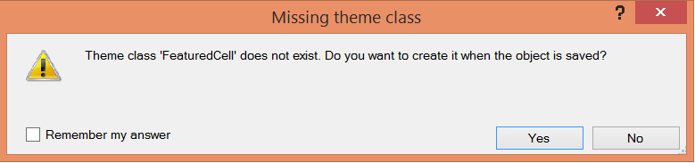

This property determines when a class is external.
An external class allows us to declare its properties through a external CSS file (that is not generated by a Theme object of the KB).
Note that this property can not be set in the GeneXus predefined classes (Attribute, Table, etc.).
Values
Description
Use to define when a class is external; allowing us to declare its properties through an external CSS file. Note that this property can not be set in the GeneXus predefined classes (Attribute, Table, etc.). Note1. The classes which are referenced in any object and are not defined in the Theme, are automatically defined as external classes. For example, when a class that does not exist is associated to a control, the user is asked if he wants this class to be automatically defined when the object is saved. The class is defined as external.  2. When a non-existent class is used directly in the HTML of a web panel (using the HTML tab of the HTML Editor), it is automatically created also, as an external class. Run-time/Design-timeThis property applies only at design-time. Scope Objects: Theme for Web See Also
|
| Backlinks |
| HowTo: Use an external CSS file on a Web Panel |